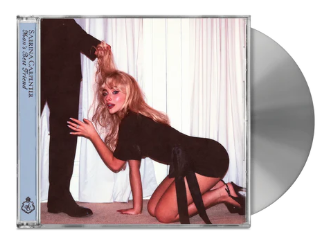

Aquests són els àlbums que ha tret durant els anys:
Can't blame a girl for trying (2014), Eyes wide open (2015), Evolution (2016), Singular: Act I (2018), Singular: Act II (2019), Emails I can't send (2022), Fruitcake (2023), Short 'n Sweet (2024), Man's Bestfriend (2025).
Aquí tenim alguns productes de merch que ven:

Tots els productes anteriors estan disponibles en vynils, casets i edicions exclusives o amb covers alernatives. Els àlbums mencionats al apartat de Discografia però que no surten aquí és perquè no tots els té en CD i els pot tenir en altres format (comprovar-ho a la web oficial de Sabrina Carpenter).
Actualment fa concerts per dos continents:
Estats on sol fer concerts:
Regne Unit, Irlanda, França, Alemanya, Bèlgica, Països Baixos, Italia, Suïssa, Noruega, Dinamarca, Suècia
Estats on sol fer concerts:
New York, Tennessee, Ontàrio, California, Chile, Argentina, Brazil, Colombia.
print("Hello World");